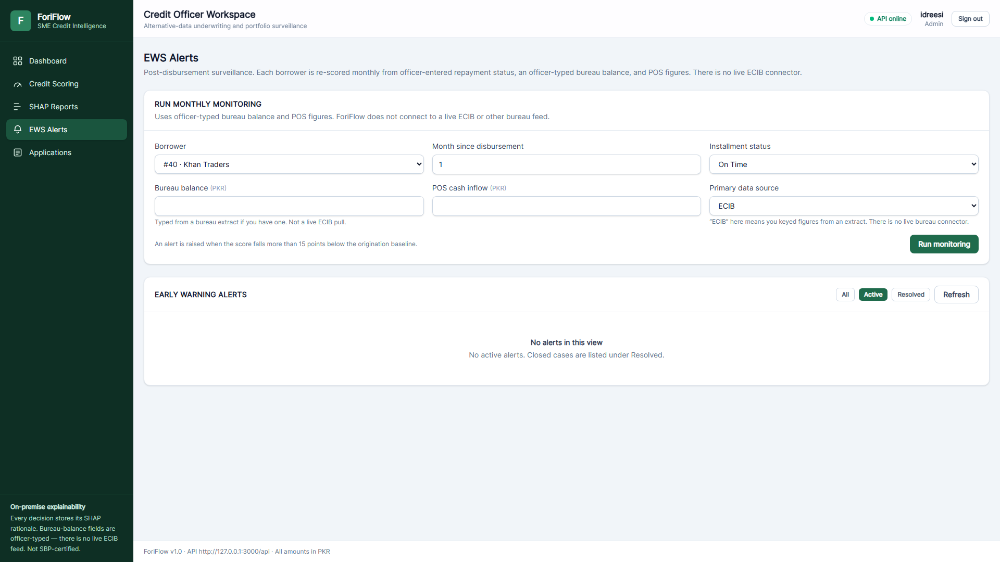
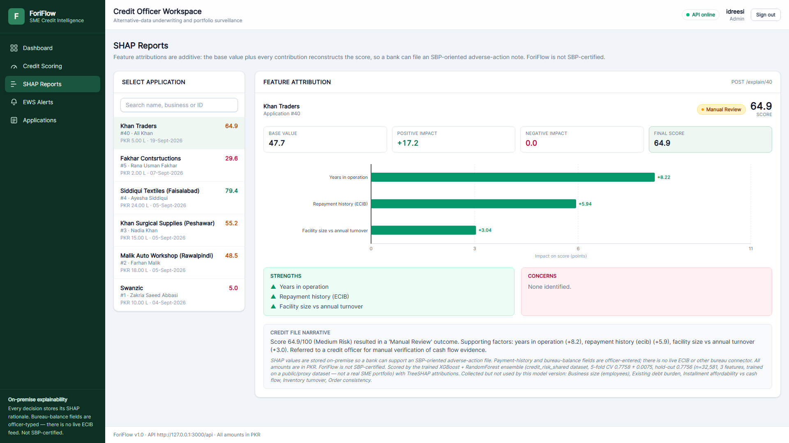
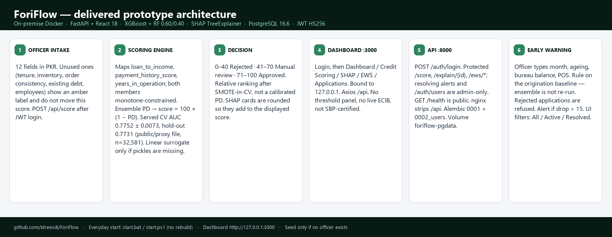

ForiFlow
On-premise AI credit scoring and Early Warning System for Pakistani SME lenders — alternative-data underwriting, SHAP-explained, with no live ECIB feed and no SBP certification.
Ramzan Ahmed Idreesi — SP23-BBD-056
Zakria Saeed Abbasi — SP23-BBD-073
Supervisor: Ms. Sarah Tariq
Why ForiFlow
No bureau file
60%+ of SME loans rejected for lack of collateral or ECIB historyAlternative signal
digital receipts, officer-entered repayment, inventory, cash flowExplained score
0–100, SHAP waterfall, adverse-action narrativeWatched after
monthly re-score, alert on a >15-pt drop, days-to-defaultSBP SME financing tables (31 Dec 2024): 183,987 SME borrowers, 6.06% of private-sector credit. ADB (2024): Pakistan MSME NPL 15.0% in 2023. ForiFlow targets the gap between an unbanked SME's real behaviour and what a collateral-only scorecard can see.
Worked example — a real API call, not a mockup
POST /score · applicant with a 6-year trading business, PKR 1.5m facility, PKR 850k/mo digital receipts, payment history 72/100 →
Decision: Manual Review (Medium Risk, confidence 35.0). Three months later, EWS re-scores the same borrower:
Drop > 15 → alert triggered, estimated runway 7 days, escalate to recovery within 48 hours.
Officer workspace — live screens




Delivered architecture

Intake (12 fields, PKR) → feature ratios → XGBoost + RF ensemble → SHAP TreeExplainer → decision (0–40 / 41–70 / 71–100) → React dashboard and FastAPI, bound to 127.0.0.1 → EWS monitoring.
Validated through four testing tiers
Plus two post-build diagnostics on the delivered prototype. No MLflow registry — training metrics are written to ml/feature_names.json; AUC-ladder experiments live in ml/auc_ladder.json and ml/gmsc_auc_ladder.json.
Model performance
Relative ranking after SMOTE-in-CV, not a calibrated PD. A public/proxy dataset, not a real Pakistani SME book — 0.85+ AUC remains a bank-data target, not a measured result.
On-premise stack
What's verified
- Full pytest suite (105/105) against the trained ensemble and a live PostgreSQL 16 instance, not just SQLite.
- SHAP additivity holds exactly: base value + contributions = displayed score, every request.
- Alembic migrations 0001 → 0002 apply clean on a fresh database.
- EWS alert, runway estimate and recommended action fire correctly on a real 60–89-day-late scenario.
- JWT auth: unauthenticated /score returns 401; a valid Bearer token returns 201.
Known limits
- No live ECIB or core-banking connector — bureau and repayment fields are officer-typed.
- Designed for SBP-oriented explainability; not SBP-certified.
- Inventory turnover, order consistency, headcount, debt and tenure are collected but do not move the served score yet.
- EWS re-scores with a rule on the origination baseline, not a second ensemble inference.
- Zero validation on a real Pakistani SME portfolio — this is a public/proxy-data prototype.
Regulatory context
ForiFlow is designed with Pakistan's regulatory landscape in view: SBP outsourcing guidelines for third-party risk models, the Personal Data Protection Act 2023, BPRD circulars on credit risk governance, ECIB bureau reporting, and SECP requirements for any future corporate vehicle. None of this constitutes certification — see Known limits.
Repository & pilot access
A 30-day on-premise pilot is available to Pakistani microfinance banks: ForiFlow runs on a bank laptop, no cloud dependency, and applicant data never leaves the premises.
Objectives met
Literature basis
Research gap: published Pakistani SME credit work does not combine ensemble scoring, SHAP, EWS and a REST API in one implemented stack. ForiFlow is an FYP prototype that fills that gap.
Build & team
14-week build. Full plan and delivered-vs-planned notes in the FYP proposal (docs/ForiFlow-Proposal-Final.docx, v2.4).